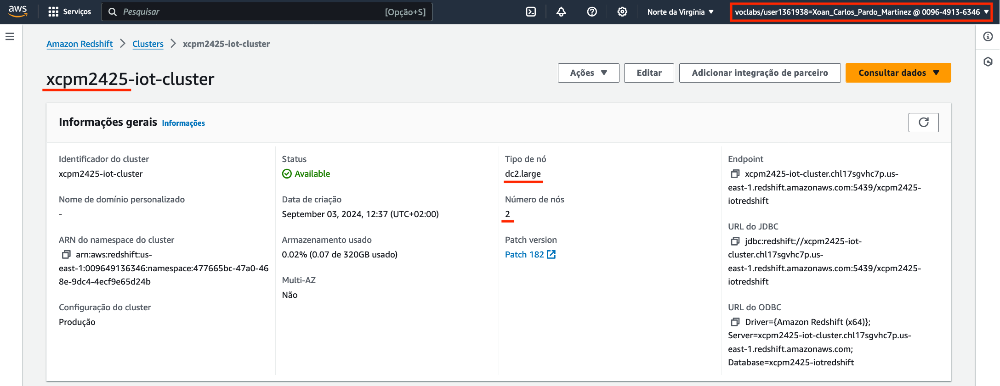
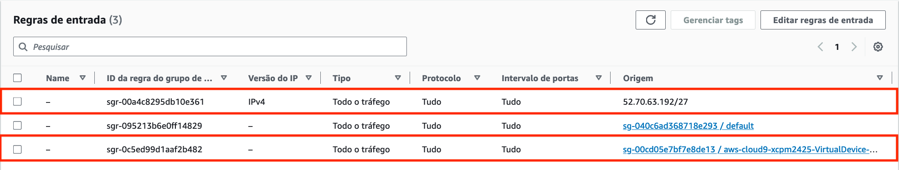
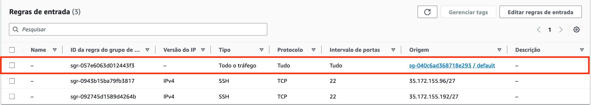
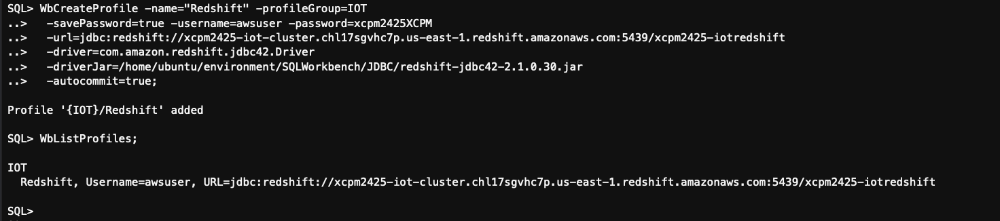
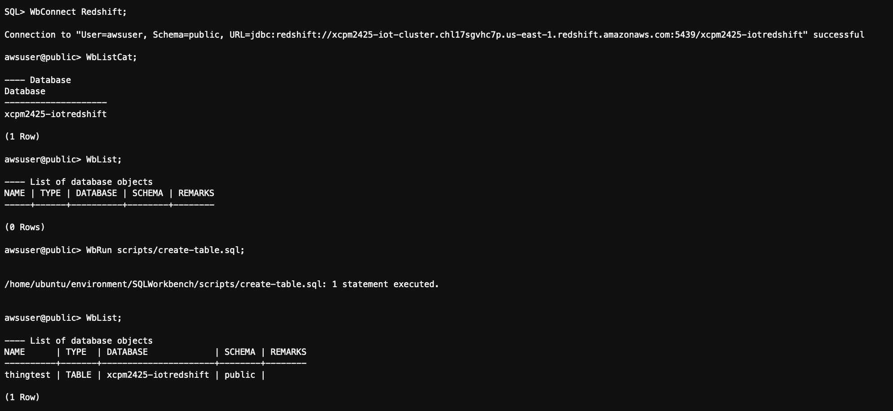
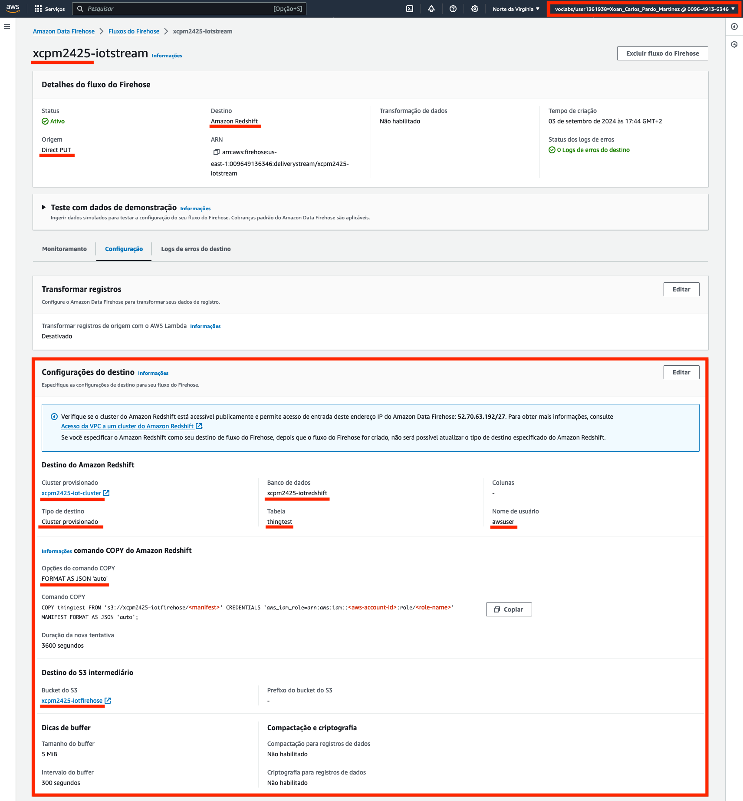
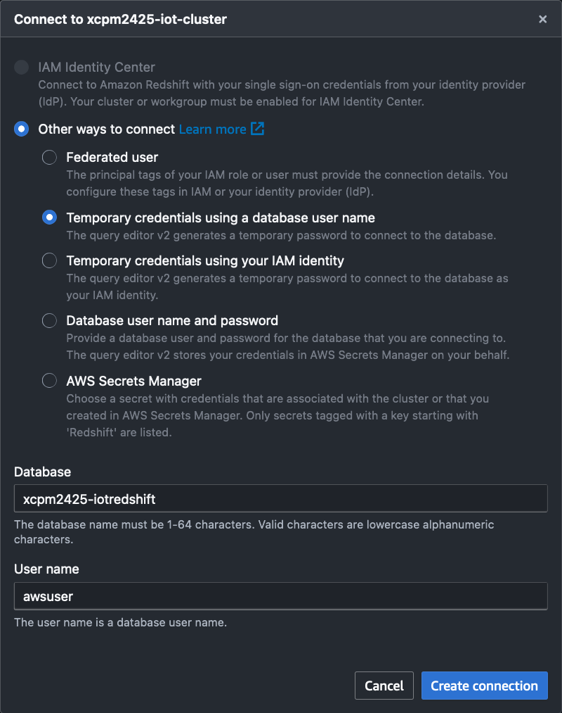
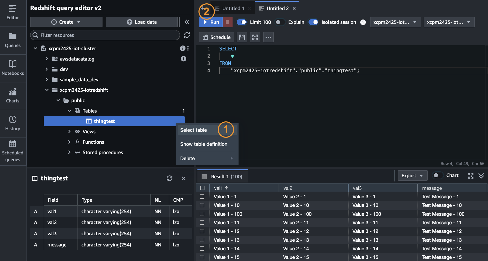
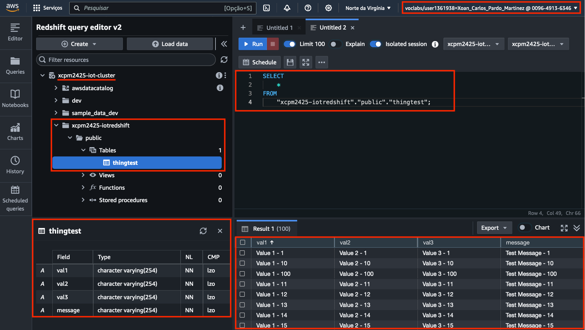

Actividade 2
STREAMING DE DATOS A REDSHIFT
Obxectivo
O obxectivo desta actividade é configurar o envío dun stream de datos de telemetría a un cluster Redshift usando o Amazon Data Firehose.
Para realizar esta actividade vamos usar como base este exemplo do curso AWS IoT Immersion Day Workshop dispoñíbel na plataforma AWS Workshop Studio. O curso só está dispoñíbel en inglés, pero podes axudarte, p. ex., da tradución automática integrada no teu navegador se o precisas.
Importante
Para realizar a práctica, segue as instrucións do exemplo tendo en conta a medida que avances as indicacións que se che dan nesta actividade. As capturas que hai que tomar para xustificar a actividade están indicadas ao final de cada paso, e ao final da actividade, a modo de resume, listanse todas as capturas que hai que incluír na memoria de xustificación da actividade.
A continuación recóllense as indicacións adicionais que terás que ter en conta en cada sección do exemplo:
Step 1 - Setup a Redshift cluster
Para crear o cluster, na consola de RedShift escolle a opción clusters no menú lateral, preme no botón Crear cluster e indica as propiedades seguintes:
- Identificador do cluster: iot-cluster. Engade o teu prefixo ao nome.
- Tipo de nó: dc2.large
- Número de nós: 2
- Seña do administrador: configura unha seña manualmente.
- Cifrado da BD: desactiva o cifrado.
- Funcións do IAM asociadas: asocia o rol IAM predefinido LabRole.
- Nas configuracións adicionais:
- No apartado de Rede e Seguranza crea un grupo de subredes na VPC predeterminada que conteña todas as subredes da VPC e activa a opción Activar recurso publicamente accesíbel.
- No apartado de Configuracións da Base de datos, configura o nome da base de datos: iotredshift. Engade o teu prefixo ao nome.
MOI IMPORTANTE !!!!!!
O cluster Redshift é un recurso “moi caro” para o crédito do que dispoñemos nos laboratorios da AWS Academy. Asegúrate de mantelo parado escollendo a opción Pausar do menú de accións do cluster antes de pechar unha sesión no laboratorio ou durante as sesións nas que non o vaias a usar. Deixalo funcionando entre sesións pode deixarte sen crédito en cuestión dun par de días. Unha vez remates a actividade elimina o cluster para evitar que poida deixarte sen crédito.
Xustificación do paso
Toma a seguinte captura para a memoria de xustificación da práctica:
- Propiedades do cluster Redshift (chega con que se vexa o apartado de informacións xerais).


Step 2 - Redshift cluster security
Vamos a conectarnos ao cluster desde a instancia Cloud9, polo que teremos que configurar regras nos grupos de seguranza da instancia e do cluster para permitir a conexión. Ademais tamén temos que engadir unha regra no grupo de seguranza do cluster para permitir o tráfico desde Firehose.
Para modificar as regras do grupo de seguranza do cluster fai o seguinte:
- Preme no nome do cluster para abrir as súas propiedades. Na aba Propiedades procura o apartado Configuracións de rede e seguranza e preme no nome do grupo de seguranza. Abrirase nunha nova xanela. Presta atención a cal é o grupo, por defecto o cluster usa o grupo default.
- Edita as regras de entrada do grupo do cluster. Engade as seguintes:
- Todo o tráfico desde a IP de Firehose: 52.70.63.192/27 (us-east-1)
- Todo o tráfico desde o grupo de seguranza da instancia Cloud9 (o nome do grupo comeza por
aws-cloud9-<prefixo>-VirtualDevice)

Imaxe: regras de entrada do grupo default.
- Edita as regras de entrada do grupo de seguranza da instancia Cloud9. Engade a seguinte:
- Todo o tráfico desde o grupo default (o grupo que está a usar o cluster)

Imaxe: regras de entrada do grupo de seguranza da instancia Cloud9.
- Todo o tráfico desde o grupo default (o grupo que está a usar o cluster)


Nota
Para “afinar” aínda máis a seguranza poderiamos ter configurado un grupo específico para o cluster Redshift no canto de usar o grupo default.
Xustificación do paso
Toma as seguintes capturas para a memoria de xustificación da práctica:
- Regras de entrada do grupo de seguranza default (o do cluster).
- Regras de entrada do grupo de seguranza da instancia Cloud9.
Step 3 - Create table definition
Para crear a táboa fai o seguinte:
- Instala o SQLWorkbench/J na instancia Cloud9. Ten en conta o seguinte:
- A instancia xa ten unha versión de Java válida (podes vela executando
java --version) - Descarga o paquete executando
wget <URL>. A URL da ligazón de descarga podes obtela aquí.
- A instancia xa ten unha versión de Java válida (podes vela executando
- Instala o driver JBDC do Redshift.
- Descarga o driver executando
wget <URL>. A ligazón de descarga podes obtela aquí. - Podes copialo onde queiras (p.ex. nun directorio JBDC dentro do directorio do SQLWorkbench)
- Descarga o driver executando
- Crea un ficheiro create-table.sql para o script do lab que crea a táboa. O ficheiro ten que crearse nun directorio scripts dentro do directorio no que descomprimiras o SQLWorkbench.
- Crea un perfil de conexión a Redshift.
- Inicia a consola do SQLWorkbench executando o script
sqlworkbench.sh - Executa o seguinte comando na consola do SQLWorkbench:
- Inicia a consola do SQLWorkbench executando o script
Nota
Ten en conta que a versión do ficheiro .jar do driver JDBC pode ser diferente no teu caso
WbCreateProfile -name="Redshift" -profileGroup=IOT
-savePassword=true -username=awsuser -password=<A_TÚA_SEÑA>
-url=jdbc:redshift://<A_URL_JDBC_DO_CLUSTER>
-driver=com.amazon.redshift.jbdc42.Driver
-driverJar=<RUTA_DO_DRIVER_JBDC>/redshift-jdbc42-2.1.0.30.jar
-autocommit=true;


Imaxe: execución do comando WbCreateProfile.- Crea a táboa.
- Conéctate con
WbConnect Redshift;executa o script conWbRun scripts/create-table.sql;e comproba o resultado conWbList;
- Conéctate con


Xustificación do paso
Toma a seguinte captura para a memoria de xustificación da práctica:
- Ambiente Cloud9 cos arquivos do SQLWorkbench na árbore de directorios e o contido do script create-table.sql nun terminal e a saída da creación da táboa (punto 5) noutro.
Step 4 - Create S3 Firehose bucket
Non fagas este paso. Crearemos o bucket S3 durante a configuración do fluxo do Firehose.
Step 5 - Setup Kinesis Firehose
Non fagas os pasos do lab. No seu lugar fai o seguinte:
- Accede á consola do Amazon Data Firehose (servizo que substitúe ao de Kinesis), preme no botón Crear fluxo do Firehose e indica as propiedades seguintes:
- Orixe: Direct PUT
- Destino: Amazon Redshift
- Nome: iotstream. Engade o teu prefixo ao nome.
- Tipo de destino do Amazon Redshift: Cluster aprovisionado.
- Cluster: escolle o cluster iot-cluster.
- Base de datos: iotredshift (co teu prefixo diante).
- Autenticación: usar nome de usuario e seña.
- Nome de usuario: awsuser.
- Seña: insire a seña que configuraches ao crear o cluster Redshift.
- Táboa: thingtest.
- Bucket S3 intermediario: crea o bucket iotfirehose. Engade o teu prefixo ao nome.
- Opcións do comando COPY:
FORMAT AS JSON 'auto' - Nas configuracións avanzadas, en Acceso ao Servizo escolle o rol predefinido LabRole.
Xustificación do paso
Toma a seguinte captura para a memoria de xustificación da práctica:
- Propiedades nas que se vexan os detalles do fluxo e a configuración do destino.


Step 6 - Update our AWS IoT rule
Non fagas os pasos do lab. No seu lugar crea no IoT Core unha regra coas seguintes propiedades:
- Nome: thingrule. Engade o teu prefixo ao nome. Usa o subliñado que non acepta guión.
- Descrición: insire unha descrición.
- Instrución SQL:
SELECT * FROM 'iot' - Accións da regra: engade unha regra de tipo Data Firehose Stream coas seguintes propiedades:
- Fluxo do Amazon Data Firehose: escolle iotstream.
- Función do IAM: escolle o rol IAM predefinido LabRole.
Xustificación do paso
Toma a seguinte captura para a memoria de xustificación da práctica:
- Propiedades da regra thingrule coa aba Accións escollida.
Step 7 - Check your roles!
Neste paso non tes que facer nada.
Step 8 - Test your code
Non executes o ratchet.py do lab 2 como se indica no lab porque o formato de mensaxe non coincide co da táboa thingtest. No seu lugar fai o seguinte:
- Crea un novo script Python co código que se fornece no lab e configura a conexión MQTT como nos labs anteriores.
Nota
Hai un erro de sintaxe no código do lab, nas instrucións print faltan os parénteses.
- Executa o script. A carga de datos efectiva no Redshift pode demorar varios minutos, mentres podes comprobar:
- Nas propiedades do fluxo Firehose, se aparece algunha mensaxe de erro nos logs de erros do destino.
- No bucket S3 iotfirehose, se se crearon os ficheiros temporais que se copiarán a RedShift.
- Para comprobar o resultado:
- Desde o SQLWorkbench na instancia Cloud9.
- Conéctate con
WbConnect Redshift;e consulta a táboa conSELECT * FROM thingtest;
- Conéctate con
-
Desde o editor de consultas do Redshift.
- Na consola do Redshift escolle o cluster iot-cluster e a opción Consultar no editor de consultas v2 no menú Consultar datos. Abrirase o editor nunha nova xanela.
-
No editor preme no nome do cluster e configura unha conexión coas propiedades seguintes:
- Forma de conexión: escolle a opción Temporary credentials using a database user name
- Database: iotredshift co teu prefixo diante.
- User name: awsuser

Imaxe: configuración da conexión no editor de consultas do Redshift.
-
Crea unha consulta escollendo a opción Select table no menú de contexto da táboa thingtest e execútaa premendo en Run.

Imaxe: execución dunha consulta no editor de consultas Redshift.
- Desde o SQLWorkbench na instancia Cloud9.


Xustificación do paso
Toma a seguinte captura para a memoria de xustificación da práctica:
- Editor de consultas do Redshift no que se vexa a táboa thingtest na vista en árbore do cluster, o esquema da táboa, a consulta SQL e o resultado.


Eliminación de recursos
MOI IMPORTANTE!!!!!!
Elimina o cluster unha vez remates a actividade para evitar que poida deixarte sen crédito.
Cando xa non os vaias usar máis elimina os recursos que se crearon nesta actividade:
- No Redshift elimina o cluster iot-cluster.
- No S3 elimina o bucket iotfirehose.
- No Firehose elimina o fluxo iotstream.
- No IoT Core elimina a regra thingrule.
Xustificación da actividade
Resume das capturas que tes que incluír na memoria de xustificación da práctica:
Step 1 - Setup a Redshift cluster
- Propiedades do cluster Redshift.
Step 2 - Redshift cluster security
- Regras de entrada do grupo de seguranza default (o do cluster).
- Regras de entrada do grupo de seguranza da instancia Cloud9
Step 3 - Create table definition
- Ambiente Cloud9 cos arquivos do SQLWorkbench na árbore de directorios e o script create-table.sql nun terminal e a creación da táboa noutro.
Step 5 - Setup Kinesis Firehose
- Propiedades nas que se vexan os detalles do fluxo e a configuración do destino.
Step 6 - Update our AWS IoT rule
- Propiedades da regra thingrule coa aba Accións escollida.
Step 8 - Test your code
- Editor de consultas do Redshift no que se vexa a táboa thingtest na vista en árbore do cluster, o esquema da táboa, a consulta SQL e o resultado.
Importante
As capturas teñen que asemellarse ás que se tomaron nos laboratorios e nas prácticas anteriores. As capturas tomadas na consola AWS teñen que incluír o menú superior no que poida verse o nome de usuario da conta.